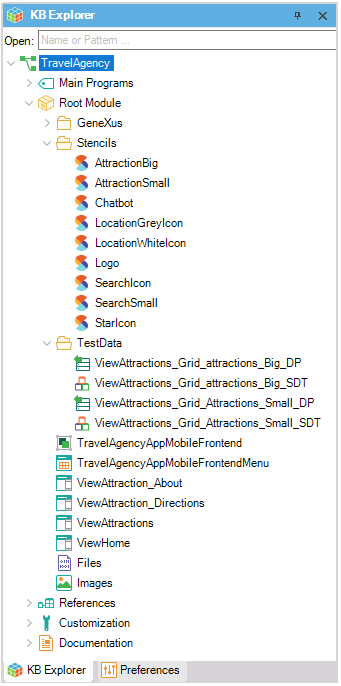

Design Import option
The Design Import option allows you to create GeneXus objects from a user interface design made with a designer tool (e.g. Sketch design toolkit or Figma design toolkit). In order to achieve a good result, the designer must follow a set of designer rules.
Start the Design Import
From the GeneXus toolbar, go to:
Tools > Application Integration > Design Import.

Design to GeneXus initial dialog
Once the dialog is open, you will see the following options.
1. File
It allows you to select your design file by indicating a file path or a file URL.
| Notes | |
| 1) | File path must have any of these extensions: .sketch, .gxsketch, .sketchcloud, .gxsketchcloud. Also, the file path can be indicated by browsing your file system using the  button. button. |
| 2) | File URL must reference any of these domains: www.figma.com/file/*. Also, the file URL could reference a publicly accessible file and must force the download once clicking on it (e.g. https://files.genexus.com/pub/TravelAgencySample.gxsketch). For more information, please refer to FAQ and Troubleshooting section. |
2. Style
By default, once you select a design file, it will suggest you create a new Design System Object based on the file name you want to import. However, you can choose another new name or even select one of your current Design System objects in order to override the style-classes inferred from the design.
3. Import as Web Panels
Check it if you want to import your design as Web Panels; otherwise, GeneXus will import them as Panels (Mobile or Angular). If you import your design as mobile panels, it will also create a Menu object that you can use for navigating into every imported panel. Take into account that importing a design file for mobile as Web Panels (or vice versa) may lead to an unexpected user interface.
4. Load option
This option will load a preview of the design file, and while it is loading it will display the inspection progress.
Design to GeneXus preview dialog
After you load a design file, GeneXus will show you a preview of what it is going to import. The dialog displays the information in two sections: on the left side, a tree structure of objects to be imported, and on the right side, it will load contextual information of what you select. Also, you can check (or uncheck) those objects that you want to import (or not) into your Knowledge Base.
1. Panels
For a Panel node, the dialog will display two tabs:
1) The Composition tab will show you a preview of the panel (when it is available) and a tree structure with every control in the layout.
2) The Code tab will show you the GXML for the target panel (which includes the panel's events if there are actions on it).
If the panel contains a grid with sample data, the import process will create the required Structured Data types and Data Providers under a "TestData" folder in your Knowledge Base.
2. Stencils
Similar to a Panel node. These objects will be created under a "Stencil" folder in your Knowledge Base.
3. Images
For an Image node, the dialog will display a preview of the image to be imported in the Composition tab.
4. Design System
The Design System node will display every token/style to be imported. Both tokens and styles will be rendered in their own tab with the proper syntax.
Import your design
Once you decide to import the design into your Knowledge Base, you simply click on the "OK" button and you can see the import progress on the Output Window (General view).

After the importing process has finished, you will see the new objects in the KB Explorer.

The Design System object will have a set of classes prefixed with "ExternalDesign" where every new theme-class inferred from the design file will inherit. Also, if custom Fonts were added, GeneXus will create its corresponding File object in the Knowledge Base, create the appropriate @font-face rule in the DesignSystem object, and set that font-face in the appropriate Style Class.
Since GeneXus 17 Upgrade 9, the design file is saved in the KB as a File object. Notice that the name of the file has the suffix "+backup":
If the file exists, it is overwritten allowing you to check/recover versions from the History, and to do a "Save content as..." if you want to dump the file to the filesystem.
Notes
- When importing from Figma for the first time, it will ask you for the Figma Token that can access that file. If you does not have a Figma account or you does not have access to the Figma File, please ask your designer to get it.
Also, you can change the Figma Token by right-clicking on the dialog and selecting the Additional Data option.
See also